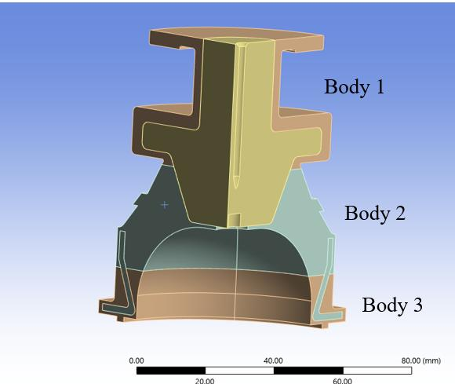
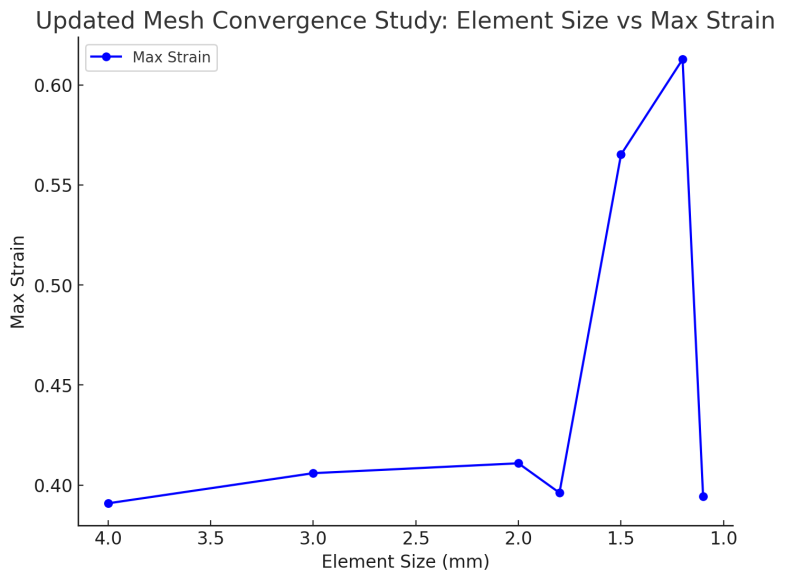
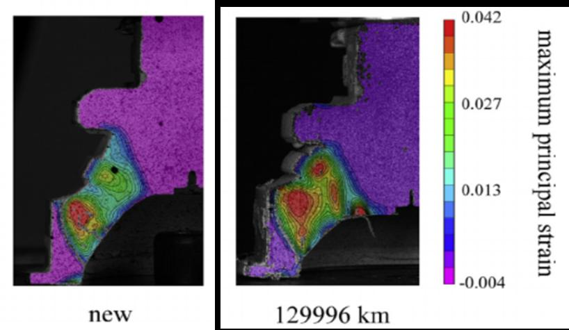

The problem
A compression test had been run on real engine mounts, new and service-aged, with the strain in the rubber measured optically by 3D DIC. The task was to build a finite element model of those tests, compare it with the experimental strain fields, explain any differences, and show how industry could use the model. The test data comes from published research by Tang, Soltani, Pinna, Wagg and Whear (2018).
Modelling strategy
- Material from test data: the rubber's stress–strain curve is linear up to 15% strain, so I modelled it as linear elastic (E = 3.7 MPa, ν = 0.499), with aluminium for the tip and rib.
- Quarter model with symmetry: cutting the geometry to a quarter, with symmetry constraints, stopped unrealistic bulging of the cut faces and freed up elements for refinement.
- Targeted meshing: I split the rubber spring into three bodies and used spheres of influence (1.2 mm elements) only at the high-strain regions, with Tet10 elements for the complex rubber and Hex20 for the rib.
- Loading: the base was fixed and a vertical displacement was applied to the tip, matching the test rig. The aged model used the deformed geometry measured after service.


Validation
The FEA reproduced where the rubber strains: the same high-strain regions appear in both the model and the DIC measurements, for both the new and the aged mount. At a matched location the model gave 0.038 strain against roughly 0.035 measured. Peak values were slightly overestimated, which I traced to simplifications: isotropic linear rubber, bonded contacts, and DIC's own speckle and calibration noise.

Why it matters for industry: a validated ageing model can predict how a mount's stiffness changes over its life, which supports service-interval planning, durability-focused design, and keeping noise isolation consistent as a vehicle ages.
What I'd take into my next project
- Finer isn't always better. Below 1.5 mm the mesh became numerically unstable. A convergence study shows where results become trustworthy, not just how small the elements can go.
- Validate against measurement. Matching the strain pattern to real DIC data is what makes the model credible enough to use.
- Next steps: a hyperelastic rubber model, temperature-dependent properties from DMTA testing, and dynamic loading.